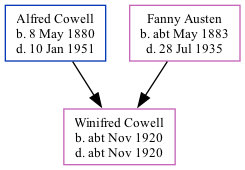

Winifred E Cowell cNov 1920 - c1920
[ Home ] | [ Calendar ] | [ Surnames Index ] | [ Family History ]The child of Alfred Cowell (a transport driver) and Fanny Austen, Winifred Cowell, the first cousin once-removed on the mother's side of <a href="I1.html">Nigel Horne</a>, was born in Thanet, Kent, England <i>c.</i> Nov 1920<span class="citation">1,2,3</span>.<p>She died on the same day<span class="citation">3,4</span>.
Parents
- Alfred John was born on May 8, 1880
- Fanny was born c. May 1883
Citations
- England & Wales births 1837-2006 - Findmypast
- England & Wales, Birth Index: 1916-2005 Online publication - Provo, UT, USA: The Generations Network, Inc., 2008.Original data - General Register Office. England and Wales Civil Registration Indexes. London, England: General Register Office. © Crown copyright. Published by permission of the Cont
- England & Wales, Death Index: 1984-2005 Online publication - Provo, UT, USA: The Generations Network, Inc., 2007.Original data - General Register Office. England and Wales Civil Registration Indexes. London, England: General Register Office. © Crown copyright. Published by permission of the Cont
- England & Wales deaths 1837-2007 - Findmypast
Media
England & Wales births 1837-2006 - BMD/B/1920/4/AZ/000306/123
England & Wales deaths 1837-2007 - BMD/D/1920/4/AZ/000181/075
Family Tree
Generated by Ged2Site. Last updated on Jul 20, 2025